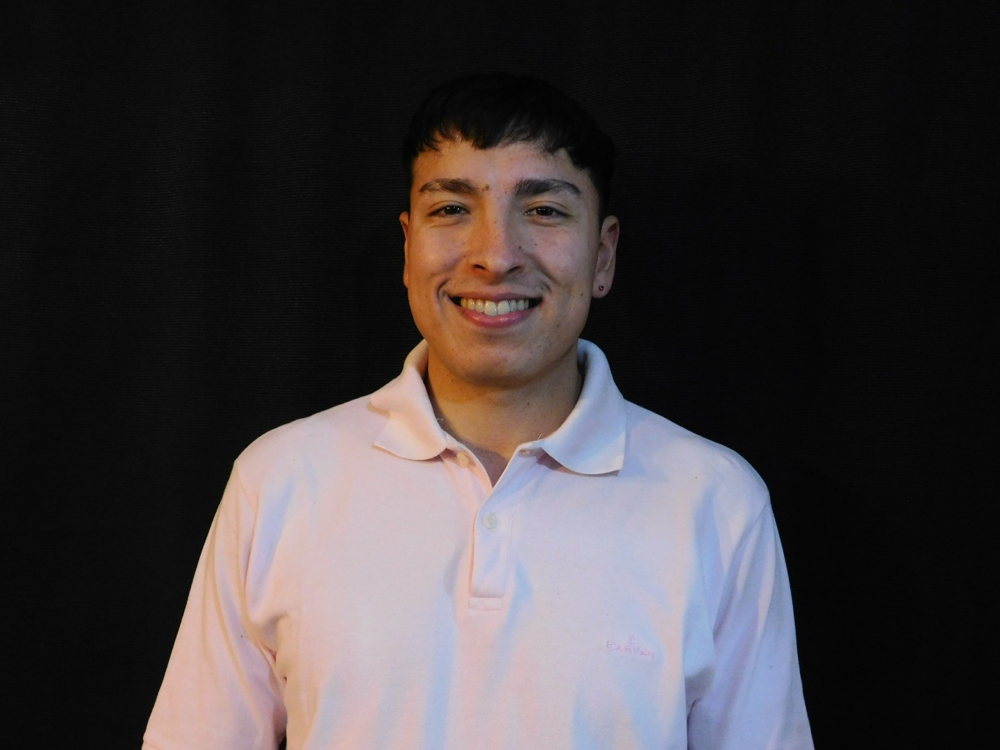

Soy un desarrollador web enfocado en crear soluciones innovadoras que mezclan creatividad y eficiencia. Me especializo en el diseño y desarrollo de sitios web adaptados a las necesidades de pequeñas y medianas empresas. Con una visión estratégica y un compromiso constante con la calidad, me mantengo al día con las últimas tecnologías para asegurar resultados que impacten y aporten valor.
"Creando soluciones web que combinan innovación y estrategia para potenciar tu presencia digital."
Hola Soy,
Agustin Anichini